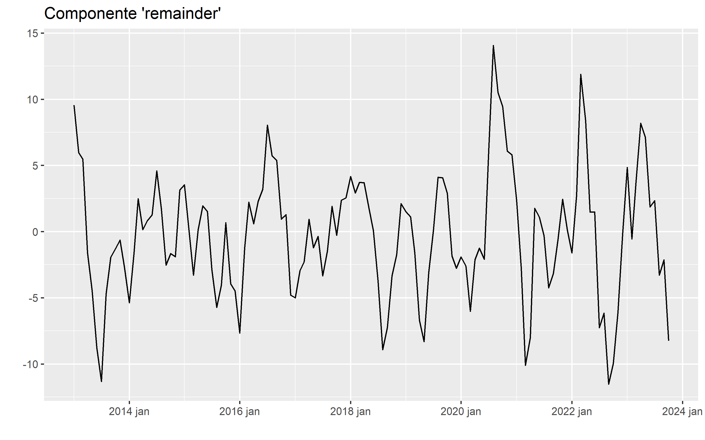
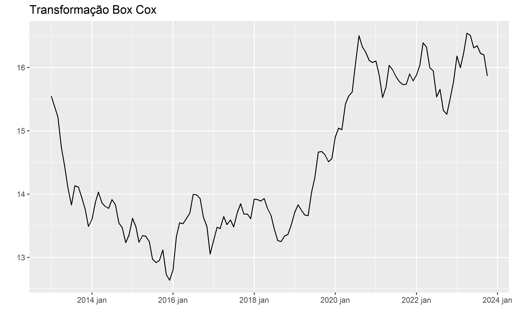
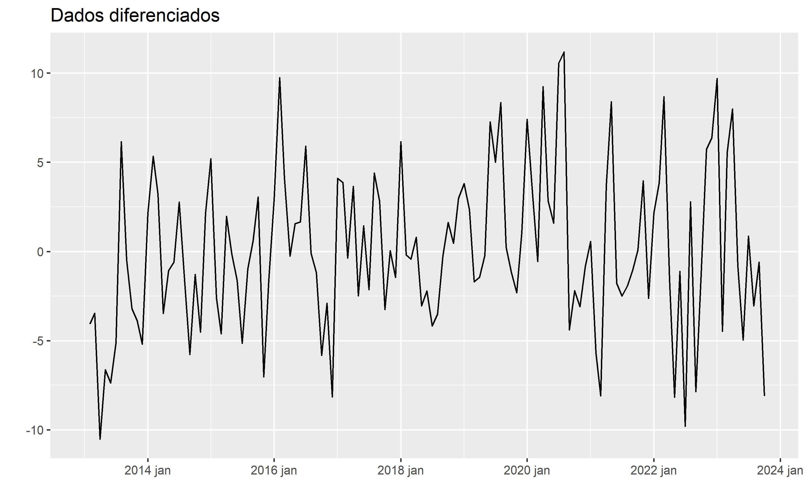
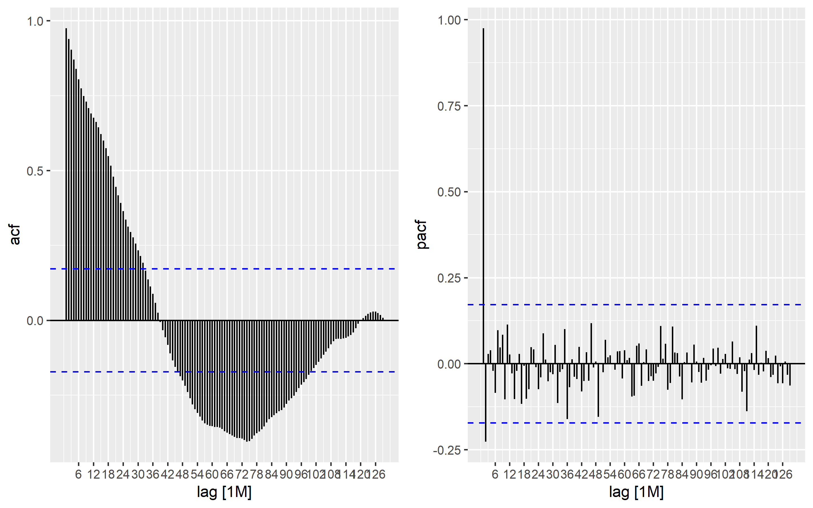
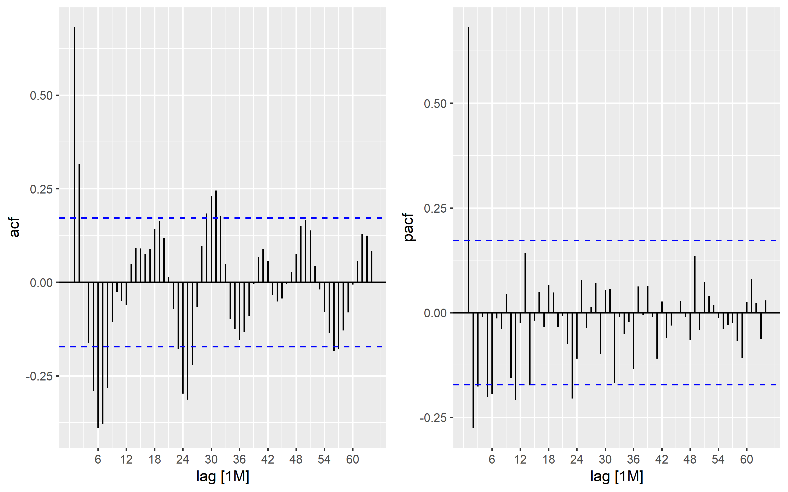
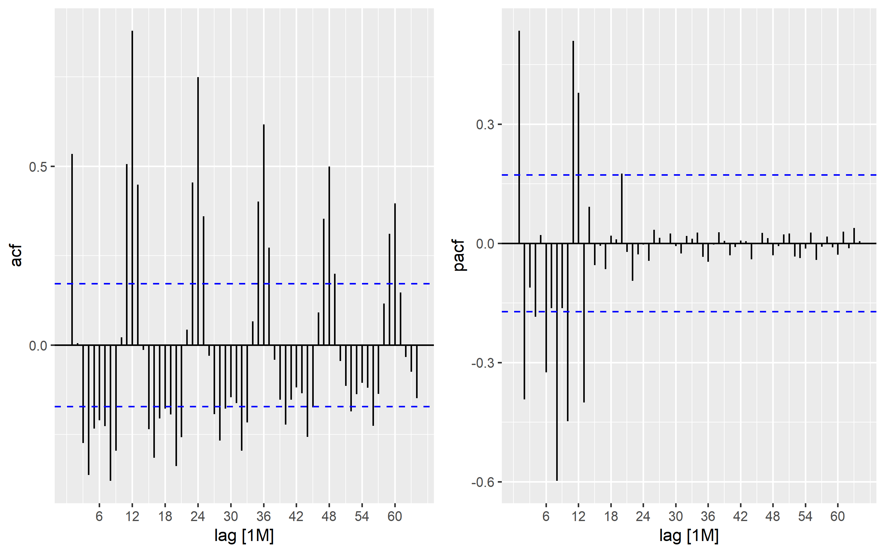
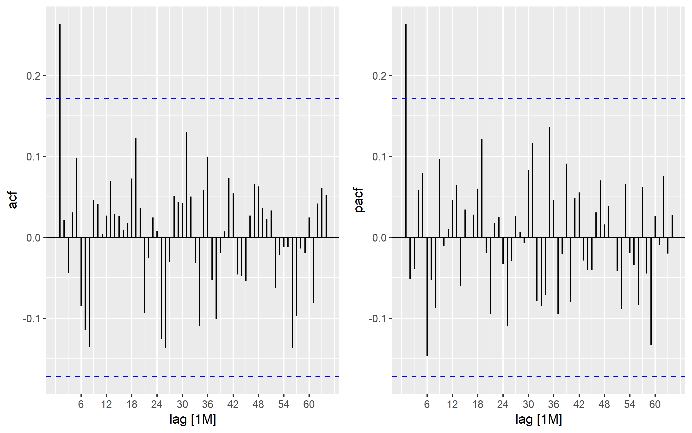

Introdução
Esta é a etapa final da análise exploratória dos dados da cotação do ouro. Para informações detalhadas sobre os dados, pacotes utilizados e o pré-processamento dos dados brutos, consulte a primeira parte desta série. Os objetos que foram criados na postagem anterior e que serão empregados nesta publicação são “fit”, que contém os resultados do modelo STL, e “set_table”, uma função desenvolvida para a criação e formatação de tabelas.
Estacionariedade dos Dados
A estacionariedade é um conceito fundamental na análise de séries temporais e processos estocásticos. Uma série temporal é considerada estacionária quando suas propriedades estatísticas, como a média e a variância, permanecem constantes ao longo do tempo. Isso implica que os padrões e as relações entre os dados não mudam com o tempo. A estacionariedade é crucial para muitas técnicas de modelagem e previsão, pois muitos métodos assumem que os dados exibem essa propriedade para produzir resultados precisos. Caso contrário, a falta de estacionariedade pode levar a resultados enganosos, uma vez que os padrões flutuantes nos dados podem obscurecer tendências reais e criar falsas correlações.
Conforme veremos adiante, existem testes estatísticos e técnicas de transformação disponíveis para avaliar e alcançar a estacionariedade em séries temporais, o que, por conseguinte, assegura uma base sólida para análises e previsões de alta precisão.
Para avaliar a estacionariedade dos dados serão utilizados o teste Dickey-Fuller Aumentado (adf.test()) e o teste de Kwiatkowski-Phillips-Schmidt-Shin (unitroot_kpss).
Dickey-Fuller (ADF)
O teste de Dickey-Fuller Aumentado (ADF, na sigla em inglês) é empregado para verificar a existência de raízes unitárias em séries temporais univariadas. A hipótese nula deste teste pressupõe a não estacionariedade; logo, se o valor-p do teste for inferior a um nível de significância especificado, temos base para rejeitar a hipótese nula e inferir que a série é estacionária.
A equação do teste ADF é dada por:
\[\Delta y_t = \alpha + \beta t + \gamma y_{t-1} + \delta_1 \Delta y_{t-1} + \delta_2 \Delta y_{t-2} + \ldots + \delta_p \Delta y_{t-p} + \varepsilon_t\]
onde:
\(\Delta y_t \text{ é a diferença entre } y_t \text{ e } y_{t-1}\),
\(\alpha\) é o termo constante,
\(\beta\) é o coeficiente da tendência temporal,
\(\gamma\) é o coeficiente de \(y_{t-1}\),
\(\delta_1\), \(\delta_2\), \(\ldots\), \(\delta_p\) são os coeficientes das diferenças defasadas de \(y_t\),
\(\varepsilon_t\) é o termo de erro.
Para realizar o teste ADF, utilizaremos a função adf.test do pacote tseries.
tseries::adf.test(ts(fit$value),alternative ="stationary")
Augmented Dickey-Fuller Test
data: ts(fit$value)
Dickey-Fuller = -2.4719, Lag order = 5, p-value = 0.3803
alternative hypothesis: stationaryO teste ADF não encontrou evidências que justifiquem a rejeição da hipótese nula de não estacionariedade.
Kwiatkowski-Phillips-Schmidt-Shin (KPSS)
O teste KPSS visa determinar se uma série temporal é estacionária em relação a uma tendência determinística, em contraposição à estacionariedade em torno de um valor médio constante. A hipótese nula do teste KPSS pressupõe que a série é estacionária. Portanto, se o valor-p obtido for superior ao nível de significância, não temos justificativa para rejeitar a hipótese nula, o que indica que a série é estacionária em relação a uma tendência. No entanto, se o valor-p for inferior ao nível de significância, podemos rejeitar a hipótese nula e concluir que a série não é estacionária em relação a uma tendência, implicando que a tendência é estocástica.
A estatística do teste KPSS é definida da seguinte forma:
\[KPSS = \frac{T^2 \cdot \hat{\sigma}^2}{\sum_{t=1}^{T} S_t^2}\]
Onde:
\(T\) é o número de observações na série temporal.
\(S_t\) é a soma cumulativa das diferenças entre as observações e a estimativa da tendência local em cada ponto na série temporal. Calculado como: \[S_t = \sum_{i=1}^{t} (X_i - \hat{m}_t)\].
\(\hat{\sigma}^2\) é uma estimativa da variância da série temporal.
Onde \(X_i\) é a observação no tempo \(i\) e \(\hat{m}_t\) é a estimativa da tendência local no tempo \(t\).
Para o teste KPSS será usado a função unitroot_kpss do pacote fable.
fit %>%
fabletools::features(value, unitroot_kpss) %>%
set_tab("Teste KPSS")| .model | kpss_stat | kpss_pvalue |
|---|---|---|
| feasts::STL(value) | 1.8768 | 0.01 |
O teste kpss, apresenta evidência para rejeitar a hipótese nula, que nesse caso é de estacionariedade.
Os dois testes indicam a não estacionariedade dos dados, uma característica desfavorável que, em alguns casos, é essencial para certos tipos de modelos. A seguir examinaremos algumas das principais abordagens para transformar os dados em um estado estacionário.
Transformando os Dados
Existem diversos métodos disponíveis para transformar séries temporais a fim de torná-las estacionárias. A seleção do método apropriado depende das características específicas da série temporal em questão e dos objetivos da análise ou modelagem em curso. Por vezes, é necessário experimentar vários métodos para identificar qual deles é o mais adequado para a situação.
Aqui estão alguns dos principais métodos de transformação:
Diferenciação: A diferenciação é uma técnica simples, ela envolve subtrair cada valor na série pelo valor anterior. Se uma série temporal não for estacionária devido a uma tendência linear, uma diferenciação de primeira ordem geralmente é suficiente.
Diferenciação sazonal: Envolve subtrair o valor atual pelo valor do mesmo período sazonal anterior (por exemplo, o valor de um ano atrás, se a sazonalidade for anual).
Decomposição: A decomposição é uma técnica que separa uma série temporal em três componentes principais: tendência, sazonalidade e ruído. Uma vez separados, você pode remover a tendência e a sazonalidade, deixando apenas o componente de ruído estacionário.
Suavização exponencial: A suavização exponencial é uma técnica que suaviza os dados, removendo flutuações de curto prazo. Ela pode ser usada para tornar a série mais estável, especialmente se houver ruído aleatório significativo.
Box-Cox Transformation: A transformação Box-Cox é uma família de transformações paramétricas que inclui a transformação logarítmica como um caso especial. Ela é usada quando a variância dos dados não é constante ao longo do tempo. A transformação Box-Cox pode ajudar a estabilizar a variância dos dados.
A seguir vou verificar a eficácia de três métodos aos dados da cotação do ouro: a decomposição, Box-Cox e diferenciação.
Decomposição
Após a decomposição dos dados, como discutido na primeira postagem desta série, obtemos várias representações dos dados originais que capturam as estruturas identificadas. Neste ponto, estou examinando a componente ‘remainder’ do modelo STL, que, teoricamente, teve as componentes de tendência e de sazonalidade retiradas. Como mencionei anteriormente, essa componente exibe um comportamento espectral muito semelhante ao dos dados brutos, incluindo elementos cíclicos ou quase cíclicos.

Vamos usar novamente o teste KPSS para verificar a estacionariedade dos dados.
| .model | kpss_stat | kpss_pvalue |
|---|---|---|
| feasts::STL(value) | 0.0361 | 0.1 |
O teste não apresentou evidências que justificassem a rejeição da hipótese nula de estacionariedade, o que sugere que a abordagem foi eficaz em tornar os dados estacionários. No entanto, como indicado durante a análise espectral e teste Ljung-Box , esses dados não exibem um comportamento de ruído branco e podem conter estruturas significativas.
Box Cox
A transformação de Box-Cox é uma técnica estatística usada para estabilizar a variância e tornar uma distribuição mais próxima da normalidade. Ela é frequentemente aplicada em séries temporais ou outras análises estatísticas quando os dados exibem heteroscedasticidade (variação não constante) ou não seguem uma distribuição normal.
Sua forma geral pode ser definida matematicamente da seguinte maneira:
Para um conjunto de dados \((x_1, x_2, x_3, \ldots, x_n)\) a transformação de Box-Cox é definida como:
\[y_i = \begin{cases} \frac{x_i^\lambda - 1}{\lambda}, & \text{se } \lambda \neq 0 \\ \ln(x_i), & \text{se } \lambda = 0 \end{cases}\]
Onde:
\(y_i\) é o valor transformado do dado \(x_i\)
O parâmetro \(\lambda\) é estimado através da função de verossimilhança e avaliação da adequação do modelo.
Quando \(\lambda\) é igual a zero, a transformação se torna uma transformação logarítmica natural (\(ln(x_i)\)) Quando \(\lambda\) não é igual a zero, a transformação é uma potência do dado original (\(x_i^\lambda\)) com uma correção para garantir que a transformação seja bem definida para todos os valores de \(x_i\).
A escolha do valor ideal para λ é geralmente feita visando a maximização da normalidade dos dados transformados ou a estabilização da variância. Uma prática comum envolve testar vários valores dentro de um intervalo específico e aplicar a transformação a cada valor da série. Nessa tarefa, estou utilizando a função forecast::BoxCox.lambda do pacote forecast, que possibilita a seleção automática desse parâmetro. Essa função determina o valor de λ de modo a maximizar o perfil da verossimilhança logarítmica de um modelo linear ajustado aos dados. Para dados não sazonais, é ajustada uma tendência temporal linear, enquanto para dados sazonais, é usado um modelo linear de tendência temporal com variáveis sazonais dummy.
lambda <- round(forecast::BoxCox.lambda(fit$value), digits = 2)
lambda[1] 0.38fit %>%
mutate(box_cox_close = fabletools::box_cox(value, lambda=lambda)) %>%
ggplot(aes(index,box_cox_close))+
geom_line()+
ggtitle("Transformação Box Cox")+
xlab("")+
ylab("")
fit %>%
mutate(box_cox_close = fabletools::box_cox(value, lambda=lambda)) %>%
features(box_cox_close, unitroot_kpss) %>%
set_tab("Teste KPSS")| .model | kpss_stat | kpss_pvalue |
|---|---|---|
| feasts::STL(value) | 1.8652 | 0.01 |
A transformação não modificou a forma dos dados, apenas o range de valores do eixo y. Entretanto, como o teste KPSS indicou isso não foi o suficiente para tornar os dados estacionários.
Diferenciação
A diferenciação em séries temporais é uma técnica amplamente empregada para converter dados não estacionários em um formato mais apropriado para análise e modelagem. Essa técnica consiste na subtração dos valores consecutivos na série temporal, com o propósito de eliminar estruturas de tendência e padrões sazonais. Ao aplicar a diferenciação, a série é transformada em uma nova série de diferenças, com a esperança de torná-la estacionária.
A remoção das estruturas mencionadas é geralmente alcançada por meio das diferenciações de primeira ordem e sazonal, e ou pela combinação e repetição dos procedimentos. A diferenciação de primeira ordem é realizada subtraindo o valor atual pelo valor anterior na série temporal e é eficaz na eliminação de tendências lineares nos dados. Por outro lado, a diferenciação sazonal envolve o cálculo das diferenças entre os valores da série no mesmo período, mas em anos diferentes, o que é útil para eliminar efeitos sazonais. Isso é realizado com o uso do “lag sazonal”, que representa o número de períodos em uma temporada. Por exemplo, se estiver lidando com dados mensais e a sazonalidade for anual, o lag sazonal seria igual a 12.
Está técnica pode ser descrita da seguinte forma:
\[\Delta y_t = y_t - y_{t-1}\]
Onde:
- \(\Delta\) representa a diferença entre o valor atual \(y_t\) e o valor anterior \(y_{t-1}\) na série tempora.
Para se determinar o número de diferenças necessárias para tornar os dados estacionários usaremos a função unitroot_ndiffs, que tem com base o teste ADF, anteriormente explicado. Lembrando que o termo “unit root” (raiz unitária) se refere a uma característica de séries temporais não estacionárias. A presença de uma raiz unitária indica que a série não reverte rapidamente perturbações, tornando-a menos previsíveis e mais suscetíveis a flutuações, o que, de fato, pode tornar a análise e a modelagem mais desafiadoras.
fit %>%
fabletools::features(value, unitroot_ndiffs) %>%
set_tab("Número de Diferenças")| .model | ndiffs |
|---|---|
| feasts::STL(value) | 1 |
O teste sinaliza a necessidade de realizar uma diferenciação para tornar a série estacionária.
fit %>%
mutate(
diff_close = tsibble::difference(value)
) %>%
ggplot(aes(index,diff_close))+
geom_line()+
ggtitle("Dados diferenciados")+
xlab("")+
ylab("")
Após a transformação dos dados, aparentemente, não parece haver nenhuma estrutura remanescente.
| .model | kpss_stat | kpss_pvalue |
|---|---|---|
| feasts::STL(value) | 0.3244 | 0.1 |
O teste KPSS apresenta evidências que sustentam a aceitação da hipótese nula de estacionariedade.
fit %>%
mutate(
diff_close = tsibble::difference(value)
) %>%
fabletools::features(value, ljung_box, lag = 78) %>%
set_tab("Teste LJUNG-BOX")| .model | lb_stat | lb_pvalue |
|---|---|---|
| feasts::STL(value) | 2768.323 | 0 |
O teste Ljung-Box indica que a série se comporta como um ruído branco, ou seja, não apresenta autocorrelação significativa.
Funções de Autocorrelações
A Função de Autocorrelação (ACF, do inglês Autocorrelation Function) e a Função de Autocorrelação Parcial (PACF, do inglês Partial Autocorrelation Function) são ferramentas amplamente utilizadas na análise de séries temporais. Elas desempenham um papel importante na exploração da estrutura de dependência entre as observações, o que, por sua vez, facilita a modelagem e previsão desses dados.
Aqui está uma breve descrição de como essas funções operam e de suas aplicações em várias situações, abrangendo a análise dos dados brutos, as componentes do modelo STL e os dados transformados. Para uma compreensão mais aprofundada, é recomendável consultar as referências mencionadas neste artigo e outras fontes pertinentes.
Função de Autocorrelação (ACF)
A ACF pode ser representada da seguinte forma:
Dada uma série temporal \({X_t}\), onde t representa o tempo, a autocorrelação para um atraso (lag) \(k\) é calculada da seguinte maneira:
\[ρ(k) = Cov(X_t, X_{t-k}) / (σ(X_t) * σ(X_{t-k}))\]
Onde:
\(ρ(k)\) é a autocorrelação para o atraso \(k\).
\(Cov(X_t, X_{t-k})\) é a covariância entre \(X_t\) e \(X_{t-k}\), ou seja, a medida de como as observações estão relacionadas em \(t\) e \(t-k\).
\(σ(X_t)\) é o desvio padrão de \(X_t\), que mede a variabilidade dos valores em \(t\).
\(σ(X_{t-k})\) é o desvio padrão de \(X_{t-k}\), que mede a variabilidade dos valores em \(t-k\).
Em resumo, a autocorrelação para um determinado atraso \(k\) é a covariância normalizada pela variabilidade (desvio padrão) das observações separadas por esse atraso. Ela varia de -1 a 1, onde valores próximos de 1 indicam forte correlação positiva, valores próximos de -1 indicam forte correlação negativa e valores próximos de 0 indicam ausência de correlação.
Função de Autocorrelação Parcial (PACF)
A PACF é calculada da seguinte maneira:
Suponha que temos uma série temporal \(x_t\) para \(t = 1, 2, \ldots, N\). O PACF de atraso \(k\) (\(PACF_k\)) é definido como:
\[PACF_k = \frac{\gamma_{t,t-k} - \sum_{i=1}^{k-1} \phi_i \gamma_{t-k,t-k+i}}{1 - \sum_{i=1}^{k-1} \phi_i PACF_i}\]
onde:
\(\gamma_{t,t-k}\) é a função de autocovariância entre \(x_t\) e \(x_t-k\).
\(\phi_i\) são os coeficientes estimados de um modelo AR de ordem \(i\), onde \(i = 1, 2, \ldots, k-1\)
A função PACF é calculada iterativamente, começando com \(k\) = 1 e progredindo até o atraso máximo desejado. Ela mede a correlação entre uma observação em um determinado momento e observações em intervalos de tempo anteriores, removendo o efeito de observações em lags intermediários. Isso ajuda a identificar a estrutura de dependência direta, indicando o possível número de termos autorregressivos a serem incluídos em um modelo AR.
Algumas Aplicações
Modelagem de Séries Temporais: A ACF e a PACF são usadas para identificar a ordem adequada (p, d, q) de modelos da fámilia ARIMA, onde “p” é a ordem do componente AR, “d” é a ordem da diferenciação e “q” é a ordem do componente MA. Lembrando que ACF é usada para evidência de MA(q) e suas sazonalidades e a PACF é usada para identificação de AR(p) e suas sazonalidades.
Identificação de Padrões: Além de sua aplicação em modelagem, a ACF e a PACF também são úteis para identificar padrões temporais nas séries temporais, como sazonalidades, e tendências.
A presença de autocorrelação significativa em lags variados nas funções ACF pode sugerir a presença de tendência, e que a série não é estacionária.
Se houver sazonalidade, você geralmente verá picos significativos na ACF em múltiplos lags (intervalos de tempo) que correspondem aos períodos sazonais. Por exemplo, em uma série mensal com sazonalidade anual, você esperaria ver picos nas defasagens 12, 24, 36, etc.
O comportamento dos picos significativos pode ajudar a indentificar o tipo de sazonalidade (aditiva, multiplicativa) presente nos dados.
Diagnóstico de Resíduos: Após ajustar um modelo a uma série temporal, a ACF e a PACF dos resíduos (diferença entre os valores observados e os valores previstos pelo modelo) podem ser usadas para verificar se há estrutura remanescente nos resíduos.
Em resumo, ACF e PACF são ferramentas essenciais na análise de séries temporais, desempenhando um papel fundamental na identificação da estrutura de dependência temporal e na seleção dos parâmetros apropriados para a modelagem de modelos estatísticos.
Dados Originais
As funções ACF e PACF não são geralmente a primeira abordagem quando se suspeita que os dados não sejam estacionários, como neste caso. No entanto, para fins ilustrativos, vou usá-las nos dados brutos.
max_lag <- nrow(fit)-1
acf_plot <-
fit %>%
feasts::ACF(value, lag_max = max_lag) %>%
feasts::autoplot()pacf_plot <-
fit %>%
feasts::PACF(value, lag_max = max_lag) %>%
feasts::autoplot()ggpubr::ggarrange(acf_plot,pacf_plot, ncol=2)
O Gráfico de ACF revela correlações significativas em lags próximos, com uma diminuição gradual que não se aproxima rapidamente de zero. Esse padrão sugere a presença de tendência nos dados, uma característica geralmente associada à não estacionariedade. A transição das correlações de positivas para negativas parece estar relacionada às mudanças no comportamento da tendência ao longo do tempo.
Por outro lado, os resultados da função PACF mostram valores significativos apenas nos lags 1 e 2, indicando que os efeitos observados no Gráfico de ACF podem ser atribuídos principalmente à presença de tendência nos dados.
Em uma série estacionária, é comum que os gráficos de ACF e PACF apresentem uma rápida diminuição após um pequeno número de defasagens, sem exibir padrões significativos. A ocorrência de padrões irregulares nesses gráficos sugere a possibilidade de ruído nos dados ou outros elementos não estacionários, corroborando assim os demais resultados das análises realizadas até o momento.
Componente ‘remainder’
Conforme já verificado, a componente ‘remainder’ demonstra estacionariedade de acordo com o teste KPSS, mas não exibe um comportamento de ruído branco conforme indicado pelo teste Ljung-Box. Isso pode ser atribuído, provavelmente, à presença de componentes cíclicas ou quase cíclicas.
Normalmente, as funções ACF e PACF são utilizadas em dados após a aplicação do operador de diferença. No entanto, a análise dos dados brutos, sem a componente de tendência, pode ser útil para ilustrar várias situações. Por exemplo, pode ajudar a melhorar a compreensão das estruturas cíclicas ou quase cíclicas nos dados. Em casos em que os dados brutos não exibem uma tendência intrínseca e já demonstram estacionariedade. Ou quando mesmo após a aplicação de diferenciação para torná-los estacionários, ainda podem persistir indícios de sazonalidade nos dados, e a estacionariedade pode não ser completamente alcançada.

Os picos positivos nos dois primeiros lags no gráfico de ACF sugerem uma forte correlação entre os valores no tempo atual e os valores no tempo imediatamente anterior. Essa observação pode ser indicativo de um componente \(MA(q)\) em um modelo da família ARIMA.
Além disso, o gráfico mostra um comportamento senoidal, com picos significativos ou quase significativos em multiplos de cerca de 12 meses. Isso sugere a presença de um componente sazonal nas séries temporais. No entanto, é importante notar que o período não é bem definido, e os picos apresentam rápido decaimento e picos adicionais ao redor do período principal. Os valores dos picos na parte periódica são baixos (menores ou iguais a 0,5), o que pode indicar que a capacidade de previsão do componente sazonal pode ser limitada. A presença de picos negativos entre os picos positivos pode indicar algum tipo de efeito de amortecimento ou compensação nas séries temporais.
O decaimento e a quase significância de outros picos na ACF podem resultar em raízes do polinômio característico que estão muito próximas do ciclo unitário. indício que os processos autorregressivos ou de média móvel têm dificuldade em convergir, o que pode resultar em previsões imprecisas e modelos instáveis.
Para lidar com raízes próximas ao ciclo unitário em modelos ARIMA, é fundamental considerar alternativas, como a adoção de um modelo SARIMA (Seasonal ARIMA), a fim de eficazmente incorporar a sazonalidade e aprimorar a estabilidade das previsões. Além disso, é apropriado realizar uma diferenciação sazonal, com o período identificado, para tornar a série temporal mais estacionária. Recomenda-se, também, conduzir uma análise minuciosa dos resultados do modelo para assegurar sua adequação aos dados específicos em questão. Isso envolve a validação dos resíduos do modelo, que por sua vez requer o uso da ACF e PACF.
A PACF indica que há significância até a segunda repetição do ciclo de 12 meses. No entanto, a natureza exata desse comportamento não é clara, e os valores, com exceção do primeiro pico, são baixos. Em resumo, os dados apresentam um comportamento complexo e ruidoso, como já evidenciado em resultados anteriores.
Com base nas análises da ACF e PACF, é razoável suspeitar que um modelo SARIMA com termos \(MA(q)(Q)\), onde \(q=1, 2\) e \(Q=1\), com uma componente sazonal de 12 meses, e \(AR(p)(P)\) onde \(p=1, 2, 4, 5\) e \(P=1\) com a mesma componente sazonal de 12 meses, podem ser apropriados para modelar essa série temporal. No entanto, a escolha final do modelo SARIMA dependerá de testes de diagnóstico adicionais e validação cruzada para garantir a precisão das previsões e a adequação do modelo aos dados.
Dados sazonais

A componente ‘sazonal’ criada pelo modelo STL é livres de ruído, tornando mais simples a visualização do padrão cíclico presente neles. Comparando os resultados dos dados brutos com os atuais, observamos que tanto a ACF quanto a PACF são semelhantes, aparentemente o modelo STL emulou o comportamento periódico dos dados brutos, mas “corrigindo” os picos para os lags múltiplos de 12.
Em resumo, a análise dessa componente sazonal pode contribuir para uma identificação mais nítida do comportamento dos dados brutos através das caracteristicas da sazonalidade identificada pelo modelo STL ao construir essa componente.
Lembrando que existem dois tipos de sazonalidade, a aditiva e a multiplicativa. A sazonalidade aditiva inclui componentes \(AR(.)\) e \(MA(.)\) degenerados, o que resulta em picos de significância estatística isolados na ACF e PACF. Por outro lado, a sazonalidade multiplicativa causa significância não apenas no “coeficiente principal”, mas também em períodos próximos a ele, como ilustrado no exemplo atual.
A PACF mostra significância até a primeira repetição do ciclo de 12 meses. É bastante provável que esse \(AR(p)(1)_{12}\) seja invertível e esteja causando o \(MA(q)(Q)_{12}\) com alta persistência nos lags múltiplos de 12, como indicado na ACF.
Dados Diferenciados
Como mencionado anteriormente, uma diferenciação foi suficiente para tornar os dados estacionários, e agora eles exibem um comportamento semelhante ao de um ruído branco, como indicado pelo teste de Box-Cox. Em um contexto de modelagem ARIMA, uma vez que a estacionariedade é alcançada, o próximo passo é aplicar as funções de autocorrelação e autocorrelação parcial para determinar os parâmetros do modelo.
Além disso, esse comportamento é um indicativo de que a tendência pode ser de natureza aditiva.

Quando os gráficos ACF e PACF apresentam resultados significativos apenas no lag 1, isso geralmente indica uma estrutura de série temporal simples e sugere que os valores da série temporal estão fortemente correlacionados apenas com seus valores imediatamente anteriores, um indicativo comum de que um modelo autorregressivo de primeira ordem, AR(1), pode ser apropriado para modelar os dados.
Portanto, neste cenário podemos começar considerando um modelo ARIMA com \(p=1\) (ordem autoregressiva) e d=1 (uma diferenciação).
No entanto, é importante notar que essa é apenas uma primeira aproximação na escolha dos parâmetros do modelo ARIMA. A seleção final dos parâmetros geralmente envolve tentativa e erro, além de critérios de seleção de modelos, como AIC (Akaike Information Criterion) ou BIC (Bayesian Information Criterion), para escolher o modelo que melhor se ajusta aos dados.
Conclusão
Nesta segunda parte da análise exploratória, abordamos os seguintes tópicos: a questão da estacionariedade dos dados, algumas das técnicas empregadas para corrigir ou atenuar os efeitos da não estacionariedade nos dados e, por fim, exploramos o uso das funções de autocorrelação e autocorrelação parcial como ferramentas adicionais para identificar e caracterizar as estruturas subjacentes nos dados.
Por meio dos testes ADF e KPSS foi verificado que os dados não possuem estacionariedade, confirmando os indícios observados nos gráficos dos dados brutos. Vale ressaltar que existem outros testes com a mesma finalidade.
Dentre as abordagens empregadas para tornar os dados estacionários, apenas a transformação de Box-Cox não se mostrou eficaz. No entanto, a escolha da transformação adequada depende das características dos dados e do modelo que será atulizado. É importante lembrar que após a modelagem, é necessário reverter a transformação para realizar previsões na escala original dos dados.
A utilização das funções ACF e PACF se destacou como uma abordagem mais relevante na identificação de parâmetros potenciais em modelos ARIMA (Média Móvel Integrada de AutoRegressão) e ETS (Erro, Tendência, Sazonalidade) em comparação com outras técnicas empregadas, que se mostraram mais eficazes na detecção de estruturas intrínsecas nos dados. Vale ressaltar que essa perspectiva reflete apenas minha opinião pessoal em relação às técnicas empregadas.
Os pontos mais relevantes identificados durante esta análise exploratória, em relação à modelagem são:
Os dados podem ser desagregados em tendência, sazonalidade e resíduo, conforme sugerido pelo modelo STL.
As componentes periódicas identificadas nas análises espectrais exibem um comportamento complexo que varia ao longo do tempo, corroborando a indicação observada nos gráficos de sazonalidade e gráficos de ACF e PACF.
A utilização de uma única diferença para tornar os dados estacionários e aparência dos dados após a transformação, apresentando flutuações aproximadamente constantes, indica a utilização de uma tendência aditiva.
Os gráficos de ACF e PACF da componente ‘remainder’ do modelo STL reforçam a presença de estruturas periódica/quase periódica. Além disso os resultados apontam para a utilização de sazonalidade multiplicativa nos modelos.
Na próxima postagem, iniciarei a construção dos modelos preditivos, começando com os modelos “clássicos” e, posteriormente, os modelos de IA.